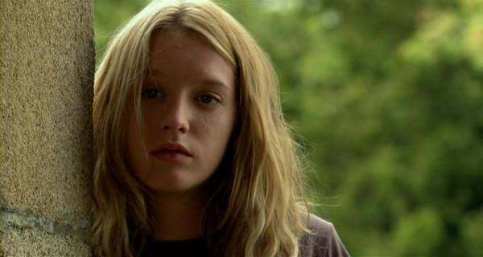
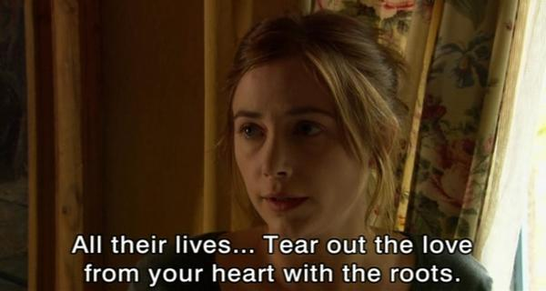

POSTS
[방구석영화제]La Petite Lili 우리의 릴리

“8명의 여인들(2002년)” 의 막내로 출연했던 ‘뤼디빈 사니에 Ludivine Sagnier’
이듬해에
스위밍 풀 (Swimming Pool, 2003) 에 출연하였는데 전혀 알아보지 못함.
역시 이 작품에서도 예전 출연작과는 분위기가 전혀 달라서 알아볼 수가 없다.

“평생 동안 사랑을 가슴에서 뿌리채 뽑아야 해요”
(
제라르 드빠르디유 의 딸
줄리 드빠르디유 Julie Marion Depardieu)